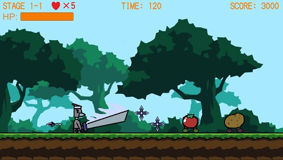
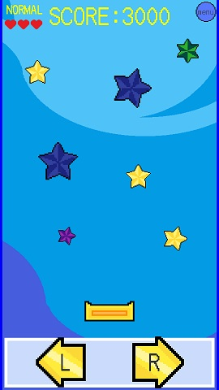

開発環境
・OS：Windows10Home ノートパソコン・動作確認ブラウザ：Google Chrome、Firefox
・使用プログラム言語：C#
・使用ソフトウェア：Unity、VisualStudio、サクラエディタ、Aseprite
・BGM/SE：魔王魂様、OtoLogic様、On-Jin ～音人～様、効果音ラボ様
・フォント：自家製ドットフォントシリーズ
制作ゲーム１：GrayBirdsMan
・1分の動画にまとめました。
・前半：GrayBirdsManPart1
・後半：GrayBirdsManPart2
※press to startをクリックするとBGMが鳴り始まりますので音量にご注意ください
・推奨PCブラウザ：Google Chrome、Firefox
・ゲーム内容：
主人公が敵の野菜達を倒しながら進めていく横スクロールアクションゲームです。
PCで遊べるwebブラウザゲームとなります。
HPが０になると残機が減り、残機が無くなるとゲームオーバーです。
全15ステージで敵のボスキャラクターは4体います。
・操作方法：
主人公の操作はキーボード、ボタンメニューの操作はマウスクリックになります。
←→左右矢印キーで移動、↑上矢印キーでジャンプ、
スペースキーで剣攻撃、Bキーで手裏剣攻撃、
Xキーでメニューを開きます。
・制作過程：
敵キャラクターやメニュー等のUIを作る際に予想通りに動かなかったりエラーが出た時は書籍やネットで検索をして調べました。
中々解決しない時はプログラムコードの書き方を変えてみたり、どこか間違った処理がされてないか見直したり、処理するプログラムコードを２つに分けたりしました。
ボスキャラクター達は通常の敵の処理に加えてHPの追加や攻撃手段を追加しました。
主人公の攻撃手段も最初は剣で斬るだけでしたが、手裏剣による攻撃も追加しました。
手裏剣がうまく飛ばなかったり、生成されたまま消えなかったりしましたがデバッグを繰り返しようやく飛ばせるようになりました。
他にもキャラクターのアニメーションや画面のフェードアウトをするタイミングの処理等色々と大変でしたが完成までたどり着く事ができました。
制作ゲーム２： StarShowerCatcher
・1分の動画にまとめました。
・ゲームURL： StarShowerCatcher
※ゲームを始めるとBGMが鳴り始めますのでご注意ください
・ゲーム内容：
落ちてくるスターをキャッチするゲームです。
スターを取ると得点が上がり、六芒星を取ると残機が減ります。
残機が０になるとゲーム終了となり結果が表示されます。
ノーマルステージとハードステージの２種類があり、最終スコアに応じて表示される星の数が変わります。
・操作方法：
タイトル画面の操作はクリック、ゲーム画面ではキーボードとクリックで操作します。
menuボタン/Xキー：メニューを開く
Lボタン/左矢印キー：左へ移動
Rボタン/右矢印キー：右へ移動
・制作過程：
フリー素材の星のイラストのドット絵化や
雰囲気に合ったフリーBGMの選定、
ゲーム画面のクリック操作によるボタンの追加など
制作に時間が掛かりましたが、
シンプルなゲームに仕上がり遊びやすくなったと思います。
制作したゲームの紹介は以上です。ここまでお読みくださりありがとうございました。